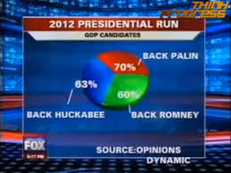
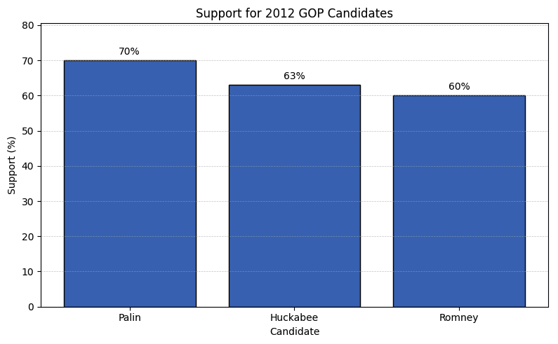
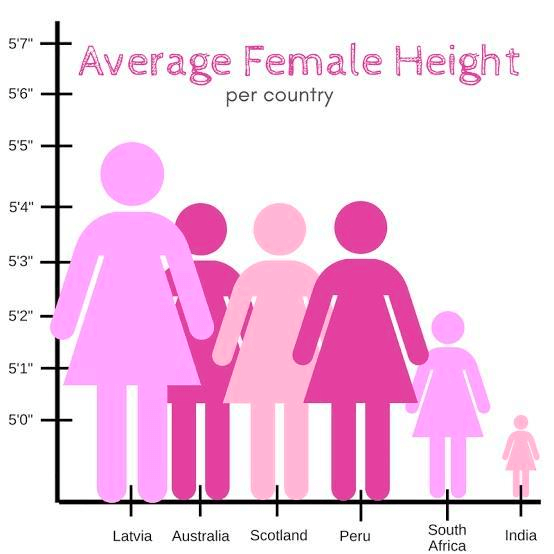
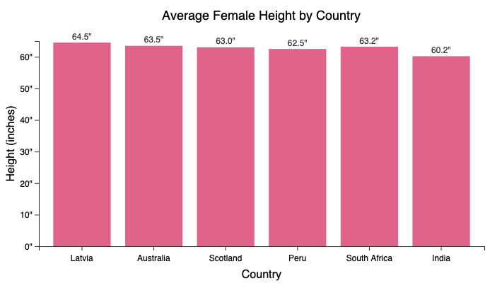

Nathan Muljadi
Assignment 2 - Visualizing Amounts using P5
- Sketch 1 - Bar Chart
- Sketch 2 - Dot Plot
- Sketch 3 - Heat Map
Assignment 3 - Visualizing Distributions using P5
- Sketch 1 - Histogram

- Sketch 2 - Box Plot

- Sketch 3 - Strip Chart

Assignment 4 - Introduction to D3
- Sketch 1 - D3 Bar Chart
- Sketch 2 - D3 Scatter Plot
- Sketch 3 - D3 Heat Map
Assignment 5 - Multidimensional Visualization
- Sketch 1 - Bubble Chart
- Sketch 2 - Line Chart
- Sketch 3 - Scatterplot Matrix
Assignment 6 - Color Scales in D3
- Sketch 1 - Bar Chart w/ Sequential Color Scale
- Sketch 2 - Diverging Bar Chart w/ Divering Color Scale
- Sketch 3 - Scatterplot w/ Qualitative Color Scale
Assignment 7 - Time Series in D3
- Sketch 1 - Multi-Line Chart
- Sketch 2 - Heat Map for Time Series
- Sketch 3 - Small Multiples (of lines) Chart
Assignment 8 - Graph Visulaization in D3
- Sketch 1 - Node-Link Diagram w/ Force-Directed Layout
- Sketch 2 - Adjacency Matrix
- Sketch 3 - Edge-Bundling for the Sketch 1
Assignment 9 - Geospatial Visulaization in D3
- Sketch 1 - Choropleth Map
- Sketch 2 - Proportional Symbols Map
- Sketch 3 - Choropleth Map w/ tooltips
Assignment 10 - Black Hat & White Hat Visualization
-
Sketch 1 - Pie Chart

- This visualization is misleading because a pie chart is supposed to represent parts to a whole.
However, this chart has three elements, 63%, 60%, and 70%, which don't add up to 100%. And although
all three candidates are almost equal to each other, Back Huckabee almost seems like it has a bigger
percentage if we are just looking purely at the pie slice, even though Back Palin is the biggest.
White Hat Visualization:

- This visualization is better because it doesn't use the factor of parts to a whole, since these three
variables are independent of each other. They have no relations other than to compare. And with a bar
chart, we can accurately see the percentages of all three candidates and who is higher/lower.
-
Sketch 2 - Bar Chart

- This visualization is misleading because they use the female icon to represent average female height.
There is lots of overlap between each category since the icons are decently wide and cover more than
half of the Australia category. This chart not only uses the height of the icons but also the width
of the icons, therefore causing us as the readers to think that there is a massive height difference
between Latvia and India, when in reality it's only a five inch difference.
White Hat Visualization:

- This visualization is better because all of the countries are represented with equal-width bars. None
of them are overlapping or overwhelming the other bars. And the height differences between countries are
not trying to overexaggerate the differences, where in this white hat visualization, they look almost similar,
which is definitely the case when we are talking about the difference between 5'5" and 5'0".
- Sketch 3 - Black & White Hat Visualizations
Final Project